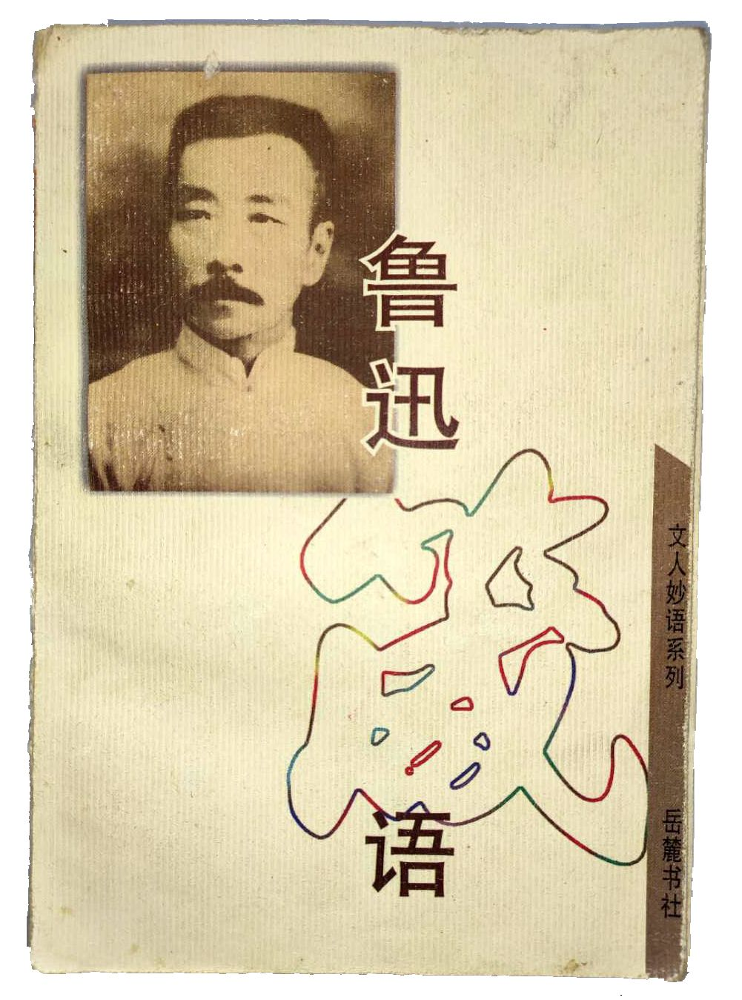
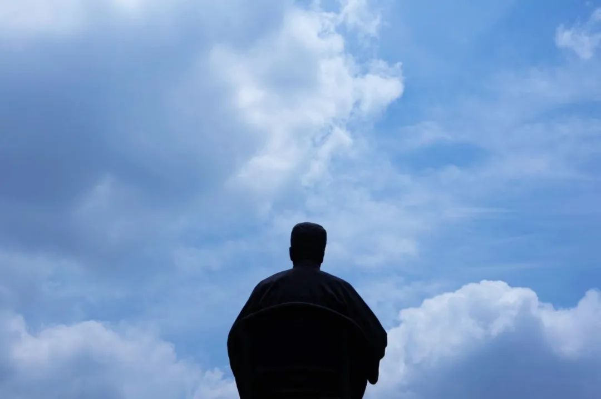
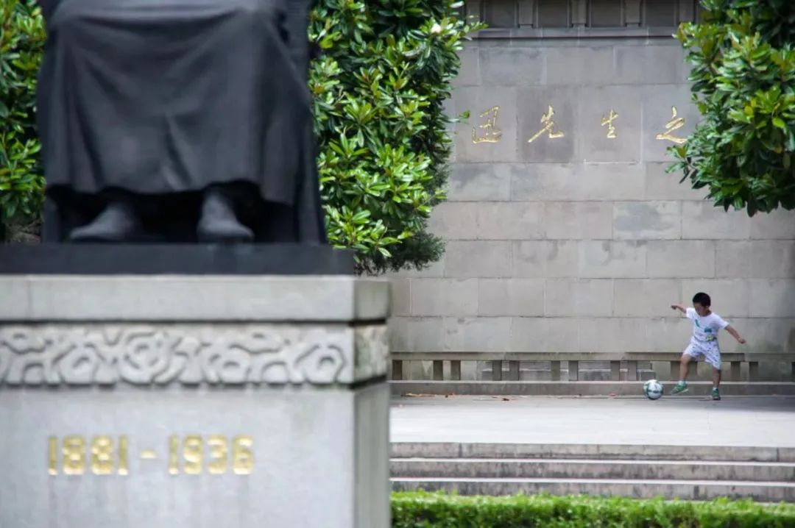
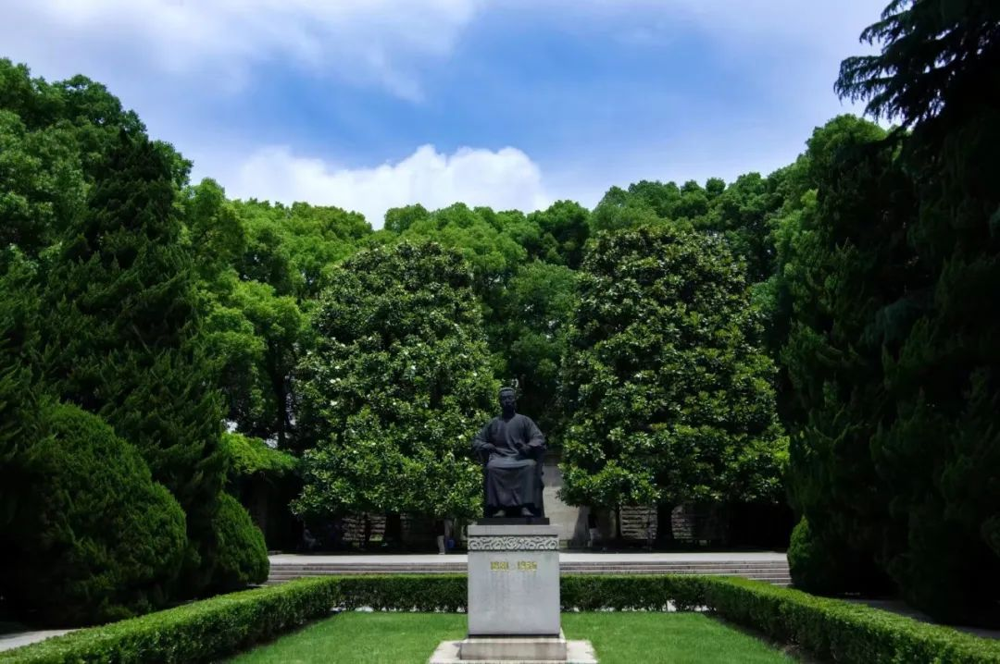

2020无春招
原文链接 备份链接 《创新经济战疫计划》，是燃财经在新型肺炎疫情期间推出的特别栏目，关注创新经济企业遇到的新难题、商讨应该采取的新对策，希望能够帮助中小企业一起战胜挑战、把握机会。 作者 | 苏琦 编辑 | 魏佳 “金三银四”的春招季，如 …
书入/书出
《鲁迅箴语》
鲁迅 著
“2009年8月24日购于武汉”

出版社: 岳麓书社
出版年: 1996-11-1
页数: 416
定价: 16.00元
装帧: 平装
编辑：李德文
ISBN: 9787805206943
“ 我有一言应记取，
文章得失不由天。”
——《集外集拾遗补编·别诸弟三首（庚子二月）》
“现在是一年的尽头的深夜，深得这夜将尽了，我的生命，至少是一部分的生命，已经耗费在写这此无聊的东西中。而我所获得的，乃是我自己的灵魂的荒凉和粗糙。但是我并不惧惮这些，也不想遮盖这些，而且实在有些爱他们了，因为这是我转辗而生活于风沙中的瘢痕。凡有自已也觉得在风沙中转辗而生活着的，会知道这意思。”
——《华盖集·题记》
“人生最苦痛的是梦醒了无路可以走。做梦的人是幸福的；倘没有看出可走的路，最要紧的是不要去惊醒他。”
——《坟·娜拉走后怎样》
“ 我想：文学文学，是最不中用的，没有力量的人讲的；有实力的人并不开口，就杀人，被压迫的人讲几句话，写几个字，就要被杀；即使幸而不被杀，但天天呐喊，叫苦，鸣不平，而有实力的人仍然压迫，虐待，杀戮，没有方法对付他们，这文学于人们又有什么益处呢？在自然界里也这样，鹰的捕雀，不声不响的是鹰，吱吱叫喊的是雀；猫的捕鼠，不声不响的是猫，吱吱叫喊的是老鼠；结果，还是只会开口的被不开口的吃掉。“
——《而已集·革命时代的文学》
“我愿中国青年都摆脱冷气，只是向上走，不必听自暴自弃者流的话。能做事的做事，能发声的发声。有一分热，发一分光。就令萤火一般，也可以在黑暗里发一点光，不必等候炬火。”
——《热风·随感录四十一》
“我先前何尝不出于自愿，在生活的路上，将血一滴一滴地滴过去，以饲别人，虽自觉渐渐瘦弱，也以为快活。而现在呢，人们笑我瘦弱了，连饮过我的血的人，也来嘲笑我的瘦弱了。”
——《两地书·第二集》
“战士战死了的时候，苍蝇们首先发现的是他的缺点和伤痕，嘬着，营营地叫着，以为得意，以为比死了的战士更英雄。但是战士已经战死了，不再来挥去他们。于是乎苍蝇们即更其营营地叫，自以为倒是不朽的声音，因为它们的完全，远在战士之上。的确的，谁也没有发现过苍蝇们的缺点和创伤。然而，有缺点的战士终竟是战士，完美的苍蝇也终竟不过是苍蝇。”
——《华盖集·战士和苍蝇》
“待到伟大的人物成为化石，人们都称他伟人时，他已经变了傀儡了。“
——《华盖集续编·无花的蔷薇》

20170525 于 上海鲁迅公园
“愈是无聊赖，没出色的脚色，愈想长寿，想不朽，愈喜欢多照自己的照相，愈要占据别人的心，愈善于摆臭架子。”
——《华盖集续编·古书与白话》
“曾经阔气的要复古，正在阔气的要保持现状，未曾阔气的要革新。大抵如是！大抵！”
——《而已集·小杂感》
“英雄的血，始终是无味的国土里的人生的盐，而且大抵是给闲人们作生活的盐，这倒实在是很可诧异的。”
——《集外集拾遗·〈争自由的波浪〉小引》
“死于敌手的锋刃，不足悲苦；死于不知何来的暗器，却是悲苦。但最悲苦的是死于慈母或爱人误进的毒药，战友乱发的流弹，病菌的并无恶意的侵入，不是我自己制定的死刑。”
——《华盖集·杂感》
“生命不怕死，在死的面前笑着跳着，跨过了灭亡的人们向前进。什么是路？就是从没路的地方践踏出来的，从只有荆棘的地方开辟出来的。以前早有路了，以后也该永远有路。”
——《热风·随感录六十六》
凡事已往，可不必言；来日正长，希冀在是 。
——《致许寿裳 1910年11月15日》

20170525 于 上海鲁迅公园
“我们所可以自慰的，想来想去，也还是所谓对于将来的希望。希望是附丽于存在的，有存在，便有希望，有希望，便有光明。如果历史家的话不是诳话，则世界上的事物可还有没有因为黑暗而长存的先例。”
——《华盖集续编·记谈话》
勇者愤怒，抽刃向更强者；怯者愤怒，却抽刃向更弱者。
——《华盖集·杂感》
“然而倘说中国现在正如唐虞盛世，却又未免是“世故”之谈。耳闻目睹的不算，单是看看报章，也就可以知道社会上有多少不平，人们有多少冤抑。但对于这些事，除了有时或有同业，同乡，同族的人们来说几句呼吁的话之外，利害无关的人的义愤的声音，我们是很少听到的。这很分明，是大家不开口；或者以为和自己不相干；或者连“以为和自己不相干”的意思也全没有。“世故”深到不自觉其“深于世故”，这才真是“深于世故”的了。这是中国处世法的精义中的精义。”
——《南腔北调集·世故三昧》
“于浩歌狂热之际中寒；于天上看见深渊。于一切眼中看见无所有；于无所希望中得救。”
——《野草·墓碣文》
“钱是要紧的。钱这个字很难听，或者要被高尚的君子们所卑笑，但我总觉得人们的议论不但是昨天和今天，即使饭前和饭后，也往往有些差别。凡承认饭须钱买，而以说钱为非比者，倘能按一按他的胃，那里边它总还有鱼肉还没有消化完。须得饿他一天之后，再来听他发议论。”
——《坟·娜拉走后怎样》
“总之，人若一经走出麻木境界，便即增加苦痛，而且无法可想，所谓 “希望将来”， 不过是自慰——或者简直是自欺——之法，即所谓“随顺现在”者也一样。必须麻木到不想“将来”也不知“现在”，这才和中国的时代环境相合，但一有知识，就不能再回到这地步去了。”
——《两地书·第一集 北京》
“暴君的专制使人民变成冷嘲，愚民的专制使人民变成死相。大家渐渐死下去，而自己反以为卫道有效，这才渐近于正经的活人。 世上如果还有真要活下去的人们，就先该敢说，敢笑，敢哭,敢怒,敢骂,敢打,在这可诅咒的地方击退了可诅咒的时代。”
——《华盖集·突然想到》

20170525 于 上海鲁迅公园
“我们听到呻吟，叹息，哭泣，哀求，无须吃惊。见了酷烈的沉默，就应该留心了；见有什么像毒蛇似的在尸林中蜿蜒，怨鬼似的在黑暗中奔驰，就更应该留心了：这在豫告“真的愤怒”将要到来。”
——《两地书·第一集 北京》
“老先生们保存现状，连在黑屋子开一个窗也不肯，还有种种不可开的理由，但倘有人要来连屋顶也掀掉它，他这才魂飞魄散，设法调解，折中之后，许开一个窗。”
——《致曹聚仁，1935年4月10日》
“人们因为能忘却，所以自己能渐渐地脱离了受过的苦痛，也因为能忘却，所以往往照样地再犯前人的错误。被虐待的儿媳做了婆婆，仍然虐待儿媳；嫌恶学生的官吏，每是先前痛骂官吏的学生；现在压迫子女的，有时也就是十年前的家庭革命者。这也许与年龄和地位都有关系罢，但记性不佳也是一个很大的原因。”
——《坟·娜拉走后怎样》
“我的习性不大好…每不肯相信表面上的事情。”
——《两地书·致许广平十》
“中国一向就少有失败的英雄，少有韧性的反抗，少有敢单身鏖战的武人，少有敢抚哭叛徒的吊客；见胜兆则纷纷聚集，见败兆则纷纷逃亡。战具比我们精利的欧美人，战具未必比我们精利的匈奴蒙古满洲人，都如入无人之境。“土崩瓦解”这四个字，真是形容得有自知之明。”
“多有“不耻最后”的人的民族，无论什么事，怕总不会一下子就“土崩瓦解”的，我每看运动会时，常常这样想：优胜者固然可敬，但那虽然落后而仍跑至终点不止的竞技者，和见了这样竞技者而肃然不笑的看客，乃正是中国将来的脊梁。”
——《华盖集，这个与那个》

20170525 于 上海鲁迅公园
“我从前也很想做皇帝，后来在北京去看到宫殿的房子都是一个刻板的格式，觉得无聊极了。所以我皇帝也不想做了。做人的趣味在和许多朋友有趣的谈天，热烈的讨论。做了皇帝，口出一声，臣民都下跪，只有不绝声的Yes，Yes，那有什么趣味？但是还有人做皇帝，因为他和外界隔绝，不知外面还有世界！”
——《集外集拾遗补编·关于知识阶级》
“世间有一种无赖精神，那要义就是韧性。听说拳匪乱后，天津的青皮，就是所谓无赖者很跋扈，譬如给人搬一件行李，他就要两元，对他说这行李小，他说要两元，对他说道路近，他说要两元，对他说不要搬了，他说也仍然要两元。青皮固然是不足为法的，而那韧性却大可以佩服。要求经济权也一样，有人说这事情太陈腐了，就答道要经济权；说是太卑鄙了，就答道要经济权；说是经济制度就要改变了，用不着再操心，也仍然答道要经济权。”
——《坟·娜拉走后怎样》
“我一向不相信昭君出塞会安汉，木兰从军可以保隋，也不会相信妲己亡殷、西施亡吴、杨贵妃乱唐那些古老的话。我以为，在男权社会里，女性是绝不会有那么大的力量，兴亡的责任都应该由男的负。但向来的男性的作者，大抵将败亡的大罪，推在女性身上，这真是一钱不值的没有出息的男人。”
——《且介亭杂文·阿金》
“可惜中国太难改变了，即使搬动一张桌子，改装一个火炉，几乎也要血；而且即使有了血，也未必一定能搬动，能改装。不是很大的鞭子打在背上，中国自己是不肯动弹的。我想这鞭子总要来，好坏是别一问题，然而总要打到的。”
——《坟·娜拉走后怎样》
——《华盖集·北京通信》

20170525 于 上海鲁迅公园
“我们从古以来，就有埋头苦干的人，有拼命硬干的人，有为民请命的人，有舍身求法的人，……虽是等于为帝王将相作家谱的所谓“正史”，也往往掩不住他们的光耀，这就是中国的脊梁。
这一类的人们，就是现在也何尝少呢？他们有确信，不自欺；他们在前仆后继的战斗，不过一面总在被摧残，被抹杀，消灭于黑暗中，不能为大家所知道罢了。说中国人失掉了自信力，用以指一部分人则可，倘若加于全体，那简直是诬蔑。”
——《且介亭杂文·中国人失掉自信力了吗》
“无穷的远方，无数的人们，都和我有关。”
——《且介亭杂文·附集》
“我的确时时解剖别人，然而更多的是无情的解剖我自己，发表一点，酷爱温暖的人物已经觉得冷酷了，如果全露出我的血肉来，末路正不知要到怎样。我有时也会想就此驱逐旁人，到那时还不唾弃我的，即使是枭蛇鬼怪，也是我的朋友，这才真是我的朋友。倘使并这个也没有，则就是我一个人也行。但现在我并不。因为我还没有这样勇敢，那原因就是我还想生活，在这社会里。”
——《坟·写在〈坟〉后面》
“我的应时的浅薄的文字，也应该置之不顾，一任其消灭的；但几个朋友却以为现状和那时并没有大两样，也还可以存留，给我编辑起来了。这正是我所悲哀的。我以为凡对于时弊的攻击，文字须与时弊同时灭亡，因为这正如白血轮之酿成疮疖一般，倘非自身也被排除，则当它的生命的存留中，也即证明着病菌尚在。”
——《热风·题记》
20170525 于 上海鲁迅公园


水妈
长按二维码向我转账
受苹果公司新规定影响，微信 iOS 版的赞赏功能被关闭，可通过二维码转账支持公众号。
原文链接 备份链接 《创新经济战疫计划》，是燃财经在新型肺炎疫情期间推出的特别栏目，关注创新经济企业遇到的新难题、商讨应该采取的新对策，希望能够帮助中小企业一起战胜挑战、把握机会。 作者 | 苏琦 编辑 | 魏佳 “金三银四”的春招季，如 …
原文链接 备份链接 ********** *****如果没有这场疫情，彭银华的人生才刚刚展开，他29岁，将至而立之年，在去年才正式成为江夏区第一人民医院的呼吸内科医师；**********和妻子结婚两年，他原计划在2月1日为她准备一场迟到 …
原文链接 备份链接 顶住开市压力，A股在大跌后逐渐修复，沪指重回3000点，创业板创下新高。未来中国的经济增长靠什么？不是靠短期的货币政策、财政政策，而是消费升级与产业升级，A股已然掀起科技热潮 文 |《财经》 …
原文链接 备份链接 经历整整31天的艰难考验之后，武汉疫情防控已经从无序走向有序，但千万居民的生活从无序到有序才刚刚开始，这个疫情核心区的社会经济生活全面恢复，还面临很多挑战 2020年2月11日，武汉市洪山体育馆武昌方舱医院，社区工作人 …
原文链接 备份链接 很多时候，流调人员不像医生，患者会主动尽可能多地给医生提供有用信息。流调人员说，希望市民在经历过疫情之后，能够了解到流调的重要性，为他们将来的工作提供更多便利。 记者 | 应 琛 当大家对新冠肺炎“零号病人”议论纷纷之 …